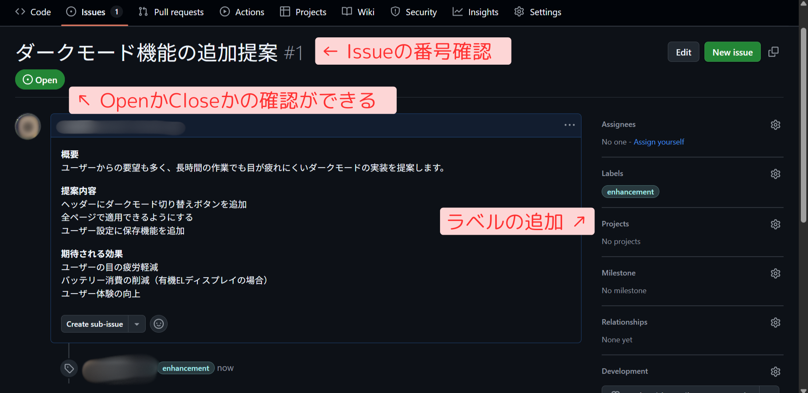
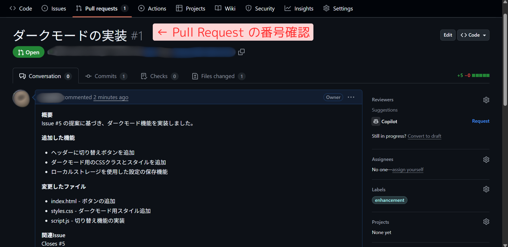

目標・目的
このサイトでは、チーム開発で必要不可欠なGitHubの「Issue」と「Pull Request」の使い方を学びます。
このテキストは 『Git Hubのアカウントが作成済みであること』と『VSCodeがインストール』されていることを前提としています。また初心者向けに作成していますが、一部はGit HubとVScodeを触ったことがある人向けの内容になっています。
Issueとは
Issueの定義
Issue（イシュー）とは、GitHub上でプロジェクトに関する「やること」や「問題点」、「改善のアイデア」などを記録・管理・共有するための機能です。
もっとわかりやすく言えば、チームで使う「やることメモ」や「相談ノート」のようなものです。
例えば、文化祭の準備で...
「ポスターを作る人は誰にする？」
「メニュー表がまだ決まってないよ」
「このデザイン、少し見づらくない？」
こうした話し合いは、ふだんはホワイトボードやメッセージアプリに書き込みながら進めていると思います。GitHubで共同開発を行う時は、Issueという機能を使います。
具体的な使用例
- バグ報告：プログラムの不具合を報告する
- 機能提案：新しい機能のアイデアを共有する
- 質問：分からないことや矛盾点を質問・指摘する
- タスク管理：Todoリストとしてやることを管理するときに使用する
Issueの書き方
基本的な構成
-
タイトル：一目で内容が分かる具体的な件名
-
概要問題や提案の詳細な説明
-
再現手順バグの場合、どうすれば同じ現象が発生するか
-
期待する動作本来どうあるべきか
-
現在の動作現在どのような状態か
-
環境情報OS、ブラウザ、バージョンなど
1. タイトルは具体的に
悪い例：「バグがある」
良い例：「ログインボタンをクリックしても反応しない」
タイトルを具体的に書かないと…
- 曖昧なタイトルだと、同じ問題が重複して報告される
- チーム全員が内容を確認する必要があり、時間のロスが発生
タイトルを具体的に書くと…
- パッと見た時に問題を特定できる
- 問題に対しての対応の優先順位も決めやすい
2. 内容は箇条書きで整理
理由
- 文章が長くなると重要な情報を見落としやすい
- 再現手順が不明確だと、解決に時間がかかる
Issue作成例
タイトル：ログインボタンが機能しない
概要
ログインページのログインボタンをクリックしても反応がなく、ログインできない状態です。
再現手順
- ログインページ（/login）にアクセス
- メールアドレスとパスワードを入力
- 「ログイン」ボタンをクリック
- →ボタンクリックしても何も起こらない
期待する動作
ログインボタンをクリックすると、入力された認証情報でログイン処理が実行され、成功時にはマイページに遷移する。
環境
- OS: Windows 11
- ブラウザ: Chrome 121.0.6167.160
- 画面サイズ: 1920×1080
タイトル：ダークモード機能の追加提案
概要
ユーザーからの要望も多く、長時間の作業でも目が疲れにくいダークモードの実装を提案します。
提案内容
- ヘッダーにダークモード切り替えボタンを追加
- 全ページで適用できるようにする
- ユーザー設定に保存機能を追加
期待される効果
- ユーザーの目の疲労軽減
- バッテリー消費の削減（有機ELディスプレイの場合）
- ユーザー体験の向上
Issue番号の確認方法
Issueを作成すると、自動的に番号（#1, #2など）が付きます。この番号は後でPRと紐づける時に使うので確認しておいてください。

Issueを閉じる（Close）とは
Issueには「Open（開いている）」と「Closed（閉じている）」の2つの状態があります。Issueとはいわば問題提起のようなものです。解決したら閉じて行くことで、問題を管理しています。
Open（開いている）状態
- まだ解決していない問題
- 対応が必要なタスク
- 実装待ちの機能提案
Closed（閉じている）状態
- 解決済みの問題
- 完了したタスク
- 実装完了した機能
- 却下された提案
Issueを閉じる方法
-
手動で閉じる
「Close issue」ボタンをクリックして手動で閉じる
-
PRとの紐付けによる自動クローズ
PRの説明に「closes #1」「fixes #1」などと書いておくと、そのPRがマージされた時に自動的に閉じられる
Tips 閉じられたIssueも後から再開（Reopen）できます。例えば、バグが再発した場合などに活用できます。
ブランチとは
ブランチの定義
ブランチとは、メインのコードから分岐した「作業用の枝」のようなものです。この枝で安全に新機能の開発やバグ修正を行うことができます。
ブランチを木に例えると...
main（木の幹）
- プロジェクトの中心となる部分
- 動作が保証された完成形のコード
- 本番環境で使用されるコード
feature branches（枝）
- 新機能開発用の作業スペース
- バグ修正用の作業場所
- 実験的な変更を試す場所
mainブランチの保護
多くのプロジェクトでは、mainブランチに特別な「保護」設定がされています。これは、本番環境で使用されるコードの品質と安定性を確保するためです。mainブランチの取り扱いには注意して取り組みましょう。
解説
直接プッシュの禁止
mainブランチには直接コードをプッシュできません。
※できたとしても控えましょう。
- 未テストコードの混入を防止
- 誤った変更による障害を予防
- コードレビューを必須化
理由
ブランチの使用例
例：ログインボタンのバグ修正
1. ブランチ作成
git checkout -b fix-login-button
2. 変更を加える
バグの修正作業を実施
3. 変更をコミット
git commit -m "Fix login button not responding"
ブランチの命名規則
推奨される命名パターン
feature/add-dark-mode- 新機能追加fix/login-button- バグ修正docs/update-readme- ドキュメント更新refactor/clean-css- コードの整理
なぜ重要か
- 作業の目的が一目で分かる
- チーム内での共通認識が持ちやすい
- 命名が不適切だと作業内容の把握に時間がかかる
Pull Requestとは
Pull Requestの定義
Pull Request（PR）は、「設計図とメッセージを添えた“改善の提案書”」のようなものです。レビューしてもらい、メインのコード（実際のプロジェクト）に組み込んでもらうための機能です。
使用場面
- 新機能の追加
- バグの修正
- ドキュメントの更新
- デザインの変更
書き方のポイント
1. 関連するIssue番号を記載
例：「Issue #3 を修正しました」
なぜ重要か：
- 問題点：紐付けがないと、どの課題に対する修正か不明確になる
- 問題点：Issue が自動で Close されず、管理が煩雑になる
- 利点：修正履歴が追跡しやすく、変更の背景が明確になる
2. 変更理由を明確に
なぜ重要か：
- 問題点：理由が不明確だと、レビュアーが意図を理解できない
- 問題点：将来的にコードの変更理由が分からなくなる
- 利点：レビューがスムーズになり、承認までの時間が短縮される
3. 影響範囲を記載
どのファイル・機能に影響があるかを説明する
Issueとの紐づけ方
PRの説明欄に「close #番号」「fix #番号」と書くと、PRがマージされた時に自動的にIssueが閉じられます。
fix #3
ログインボタンのバグを修正しました。
イベントリスナーが正しく設定されていなかった問題を解決しました。
PR番号の確認方法
PRを作成すると、Issueと同様に番号が付きます。レビューやマージの際にこの番号を使います。

Pull Requestの例
タイトル：ログインボタンの修正 #3
概要
Issue #3 で報告されたログインボタンの問題を修正しました。
変更内容
- login.js にイベントリスナーを追加
- ボタンのクリックイベントを正しく処理するように修正
- エラー処理を追加
影響範囲
- ログインページのみに影響
- 他の機能への影響なし
テスト結果
- ✅ ログインボタンクリックでフォームが送信される
- ✅ バリデーションが正しく機能
- ✅ エラー時のフィードバックが表示される
+ loginButton.addEventListener('click', handleLogin);
+ function handleLogin(event) {
+ event.preventDefault();
+ // ログイン処理
+ }
- // TODO: ログイン処理を実装
関連Issue
Closes #3
タイトル：ダークモードの実装 #5
概要
Issue #5 の提案に基づき、ダークモード機能を実装しました。
追加した機能
- ヘッダーに切り替えボタンを追加
- ダークモード用のCSSクラスとスタイルを追加
- ローカルストレージを使用した設定の保存機能
変更したファイル
- index.html - ボタンの追加
- styles.css - ダークモード用スタイル追加
- script.js - 切り替え機能の実装
関連Issue
Closes #5
スクリーンショット
.gitignoreについて
Pull Requestを作成する前に、不要なファイルが含まれていないか確認しましょう。GitHubにプッシュ（PullRequest）を実行すると、全世界の人がその内容を確認できるようになります。そのため機密情報が含まれるファイルや、不要なファイルを公開しないように設定するファイルが.gitignoreです。
.gitignoreとは
Gitで管理しないファイルやフォルダを指定するための設定ファイルです。
代表的な除外対象
-
依存関係のフォルダ
node_modules/npmパッケージのインストール先 -
機密情報
.env, config.jsonAPIキー、パスワードなどを含むファイル -
開発環境の設定
.vscode/, .idea/エディタ固有の設定ファイル -
ビルド生成物
dist/, build/コンパイル後のファイル -
OS生成ファイル
.DS_Store, Thumbs.dbOSが自動生成する設定ファイル
重要な注意点
- 既に追跡されているファイル： .gitignoreに追加しても無視されません
- チーム共有が必要なファイル： 開発に必要な設定ファイルは除外しないように注意
- プロジェクト固有の設定： フレームワークやツールに応じた適切な設定が必要
Tips
- プロジェクト作成時に.gitignoreを設定することを推奨
- GitHubのテンプレート集を活用する
- チーム内で.gitignoreの内容を共有・合意する
Mergeとは
Mergeの定義
Mergeは、ブランチ（開発の枝分かれ）を合流させることです。PRで提案した変更をメイン（実際のプロジェクト）のコードに組み込む作業です。
使用時の注意点
競合（コンフリクト）とは
複数の人が同じファイルの同じ場所を別々に変更した時に発生する問題です。
具体例：
// mainブランチの元のコード
const buttonColor = "green";
// AさんとBさんが同時に変更を加えた場合...
<<<<<<< HEAD
const buttonColor = "red"; // Aさんの変更
=======
const buttonColor = "blue"; // Bさんの変更
>>>>>>> feature/change-color1. 最新のmainブランチを取得
# mainブランチに移動して最新化
git checkout main
git pull origin main
# 作業ブランチに戻る
git checkout fix-issue-1
# mainの内容を作業ブランチに取り込む
git merge main2. コンフリクトの解決
VSCodeのマージエディタを使用して解決します：
- 赤色の部分: 現在のブランチの内容（あなたの変更）
- 緑色の部分: 取り込もうとしている内容（mainブランチの変更）
- 「Accept Current」「Accept Incoming」「Accept Both」から適切な方を選択
3. 変更の反映
# 解決した変更を反映
git add .
git commit -m "Resolve merge conflicts with main branch"
git push origin fix-issue-1コードレビューの重要性
レビューとは
他のメンバーからPull Requestで提出されたコードをチェックし、問題点や改善点を指摘する作業です。チーム開発を行う際はMergeする（本番環境に落とし込む）前に、本当にPushしてもいいかの確認を行います。その際にこの機能が使えます。
コードレビュー
チームメンバーのコードをチェックし、品質を保つための作業です。
主なチェックポイント：
- バグの有無
- コーディング規約との整合性
- セキュリティ上の問題
レビューの流れ
- PRの内容を確認
- 変更されたコードを確認
- コメントで指摘・提案
- 必要に応じて修正を依頼
- 修正確認後、承認
レビューのポイント
レビューを依頼する側
- 変更内容を明確に説明
- テスト結果を記載
- 自己レビューを実施してから依頼
レビューする側
- 建設的なフィードバック
- 具体的な改善案の提示
- タイムリーな対応
レビューコメントの例
実践編
実際に手を動かしてみましょう！以下の手順で進めていきます。
Step 1: Issueを立てる
まずは練習用リポジトリにIssueを作成してみましょう。
基本的な手順
- GitHubで 練習用リポジトリ を開く
- 「Issues」タブをクリック
- 「New issue」ボタンをクリック
- タイトルと内容を入力
- ラベルを設定（後述）
- 担当者を設定（必要な場合）
- 「Submit new issue」をクリック
ラベル機能について
ラベルはIssueの種類や状態を視覚的に表現する機能です。
主な標準ラベル
バグ報告用
機能改善・追加用
ドキュメント関連
助けが必要な課題
ラベルの使い方のコツ
- 複数のラベルを組み合わせることができます
bug priority: high
- プロジェクトに合わせて新しいラベルを作成できます
design in review
担当者（Assignees）の設定
- 課題の担当者を明確にできます
- 複数人をアサインすることも可能
- 担当者には自動で通知が送られます
Step 2: リポジトリをフォークしてローカルに取得
練習用リポジトリをフォークして、自分のPC上に複製します。
フォークとは
他の人のリポジトリのコピーを自分のGitHubアカウントに作成することです。これにより、元のプロジェクトに影響を与えることなく、自由に変更を加えることができます。
クローンとは
クローンとは、GitHubのリポジトリをローカル（自分のPC）にコピーすることです。
クローンのメリット
- オフラインでも作業できる
- 好きなエディタでコードを編集できる
- ローカルでテストを実行できる
- 変更履歴を完全に保持できる
注意点：
- プライベートリポジトリの場合は認証情報が必要
- 大きなリポジトリは時間がかかる場合あり
- Git LFSを使用しているリポジトリは追加設定が必要
1. フォークを作成
- 練習用リポジトリのページを開く
- 右上の「Fork」ボタンをクリック
- 必要に応じて設定を確認し、「Create fork」をクリック

2. ローカルにクローン
- フォークしたリポジトリページを開く
- 緑色の「Code」ボタンをクリック
- HTTPSのURLをコピー
- VSCodeでターミナルを開く（Ctrl + @）
- 適切なフォルダに移動
- クローンコマンドを実行
# 作業フォルダに移動
cd プロジェクトを置きたいフォルダのパス
# リポジトリをクローン
git clone https://github.com/あなたのユーザー名/リポジトリ名.git
# クローンしたフォルダに移動
cd リポジトリ名
Tips
- フォーク元のリポジトリを「upstream」として追加しておくと、元のリポジトリの更新を取り込めます
git remote add upstream https://github.com/元のユーザー名/リポジトリ名.git - VSCodeの場合、GUIからも簡単にクローンできます（Ctrl+Shift+P → 「Git: Clone」）
Step 3: ブランチを作成
VSCodeでブランチを作成します。
- VSCodeでリポジトリを開く
- 左下のブランチ名をクリック
- 「Create new branch」を選択
- ブランチ名を入力（例：fix-issue-1）
# ターミナルで実行する場合
git checkout -b fix-issue-1
Step 4: 変更を加える
ファイルを編集してコミットします。
- ファイルを編集
- 変更を保存（Ctrl+S）
- ソース管理パネルを開く（Ctrl+Shift+G）
- 変更したファイルをステージング（+ボタン）
- コミットメッセージを入力
- チェックマークをクリックしてコミット
# ターミナルで実行する場合
git add .
git commit -m "fix #1: ログインボタンのバグを修正"
Step 5: Pull Requestを送る
変更をGitHubにpushしてPRを作成します。
- VSCodeで「同期の変更」をクリック（または「publish branch」）
- GitHubのリポジトリページに移動
- 「Compare & pull request」ボタンをクリック
- タイトルと説明を入力（Issueとの紐付けを忘れずに）
- 「Create pull request」をクリック
# ターミナルで実行する場合
git push origin fix-issue-1

Step 6: Mergeする
PRの承認からマージまでの流れを見ていきましょう。
今回の練習リポジトリは皆さんにはMerge権限が与えらていないのでできません。やってみたい人は、自分でrepositoryを作成して実践してみましょう。
1. レビュー依頼を受けた時の流れ
コードの確認
- 変更されたファイルを一つずつ確認
- コードの品質をチェック（バグ、命名規則、セキュリティ）
- Issue #3 の内容と修正内容が一致しているか確認
フィードバックの提供
必要に応じて修正依頼やコメントを送ります：
コメントの例：
- "handleLoginの中にエラーハンドリングを追加した方が良いと思います。"
- "テストケースにエラー時の動作確認も含めてはどうでしょうか？"
2. マージの実行手順
-
承認を行う
- 「Files changed」タブでレビューを開始
- 「Review changes」をクリック
- 「Approve」を選択して承認
-
マージを実行
- 「Conversation」タブに戻る
- 緑色の「Merge pull request」ボタンをクリック
- マージ方法を選択（通常は「Create a merge commit」）
- 「Confirm merge」でマージを完了
マージ後の処理
- Issue #3 が自動的にCloseされます（PRで "fixes #3" と書いた場合）
- 作業ブランチは不要になるので削除可能です
- 他のメンバーは `git pull` で最新のmainブランチを取得できます
コンフリクト解決の手順
マージ時にコンフリクトが発生した場合は、以下の手順で解決します：
1. 最新のmainブランチを取得
# mainブランチに移動して最新化
git checkout main
git pull origin main
# 作業ブランチに戻る
git checkout fix-issue-1
# mainの内容を作業ブランチに取り込む
git merge main2. コンフリクトの解決
VSCodeのマージエディタを使用して解決します：
- 赤色の部分: 現在のブランチの内容（あなたの変更）
- 緑色の部分: 取り込もうとしている内容（mainブランチの変更）
- 「Accept Current」「Accept Incoming」「Accept Both」から適切な方を選択
3. 変更の反映
# 解決した変更を反映
git add .
git commit -m "Resolve merge conflicts with main branch"
git push origin fix-issue-1
悪い例：
良い例：